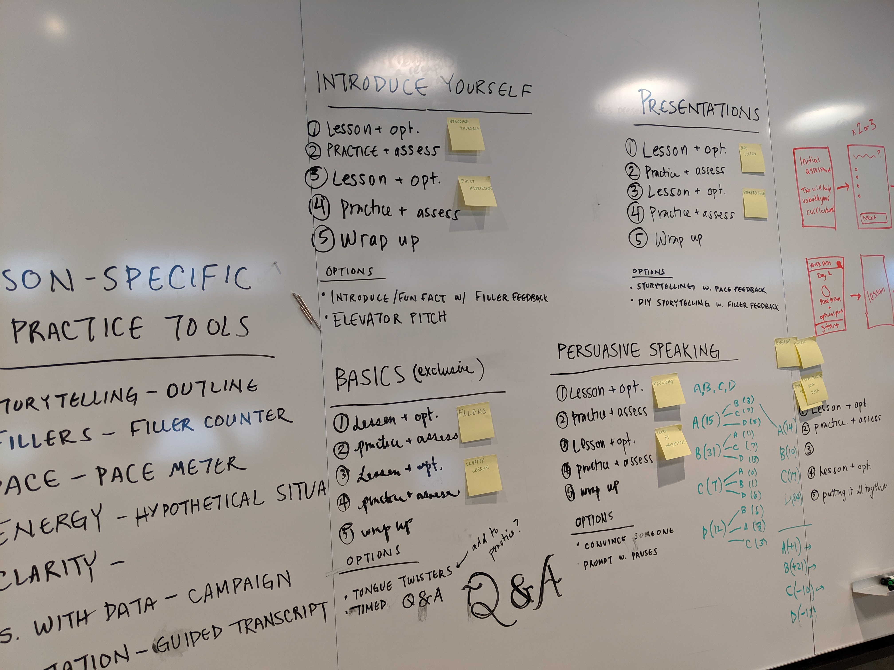
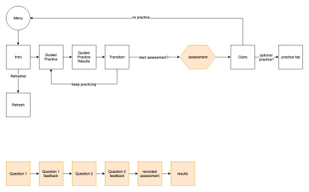
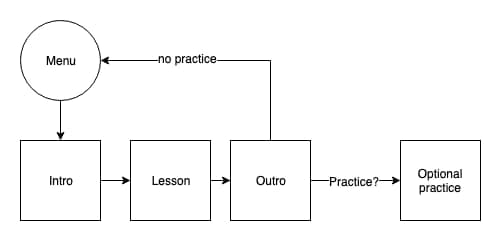

Orai is a mobile communication coach that empowers users to become stronger, more confident communicators through interactive lessons, tips, and assessments. We were a small team of fewer than 20 people based primarily in Philadelphia, USA, but with various teammates scattered around the globe. I was laid off in June 2019 due to the team's financial shortcomings.
As a member of the design team, I worked alongside the design lead and an instructional designer to create original content, streamline the design system, and design consumer-facing content that reached millions of users worldwide.
One of the most challenging issues I tackled during my time at Orai was improving user retention. Orai was experiencing an overwhelming number of user dropout after a week of 'bingeing' on lesson content. Users were also consuming content at a higher rate than the team was able to produce.
Research demonstrates that repeated, consistent exposure to concepts is the most effective method for strengthening learning retention. I examined popular and effective learning apps to identify how they employed different methods to encourage users to return.
Our understanding of learning science served as the foundation for the redesign and informed our approach, which exposed users to consistent material in short doses throughout the day and encouraged regular practice.
I conducted user interviews with existing users - both within our enterprise client teams and individual users - to learn more about our users' learning objectives. I learned that users were eager to learn new content, but exhausted material too quickly. They would 'binge' the app but found little reason to return after they finished their lessons. While we loved that users were so excited by the content that they would exhaust the lessons so quickly, we also recognized the importance of practicing material and refining skills. As such, we decided to introduce cadence setting.
While the original experience allowed users to pick and choose from an open collection of lessons, the new approach was regimented - users would complete a quiz as part of their onboarding to better determine their personal learning objectives. From there, their results would determine which lesson pack was most appropriate for their learning goals. The lesson packs were designed to span 5-days and included a combination of new material and reinforcing learned content.
I created an animated mock-up to demonstrate interaction and flow.
My time at Orai was cut short shortly after the experience redesign was moved to development. I wish the best to the Orai team as they move ahead and look forward to where they go in the future.